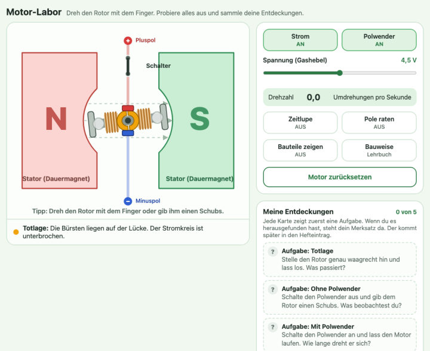
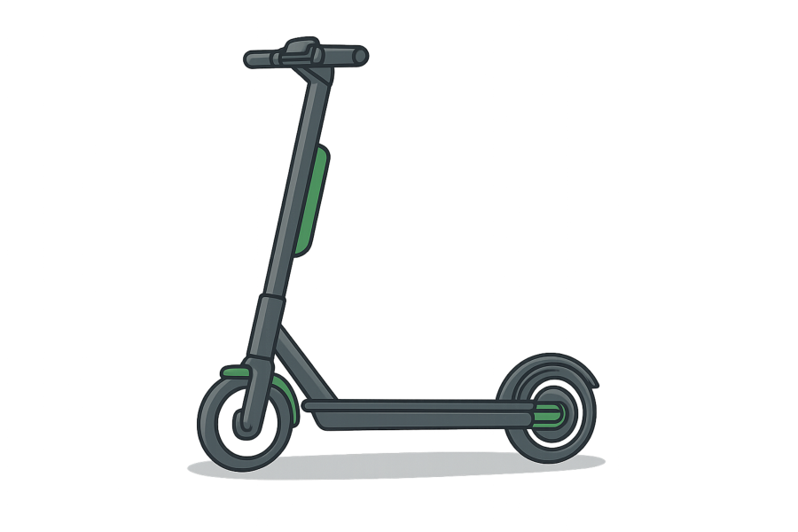
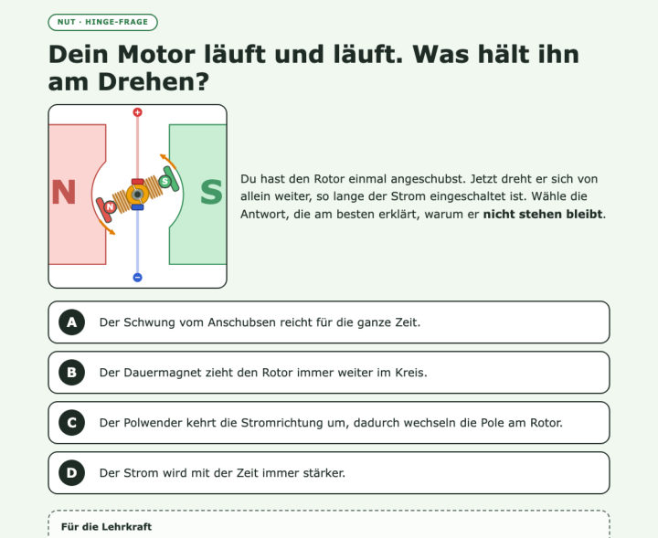
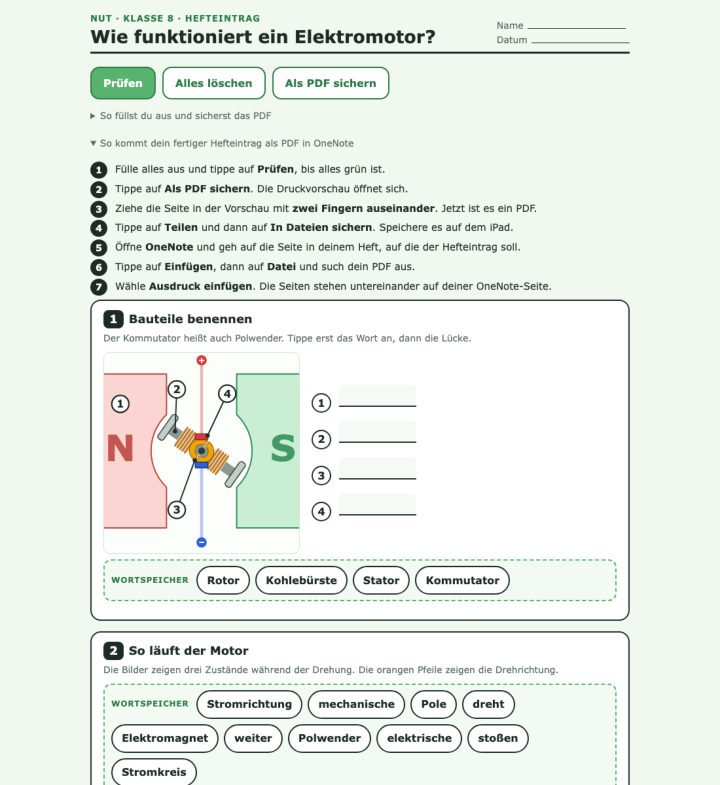
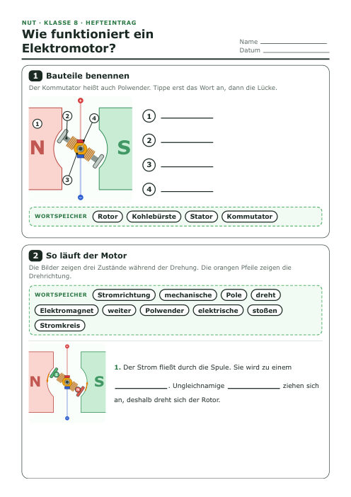
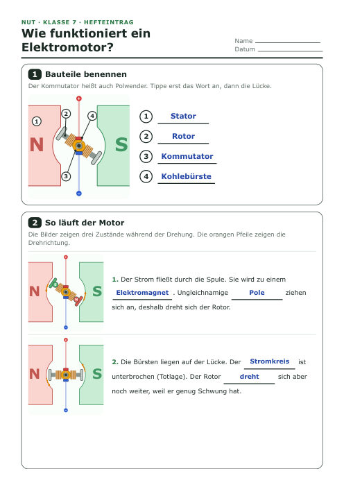
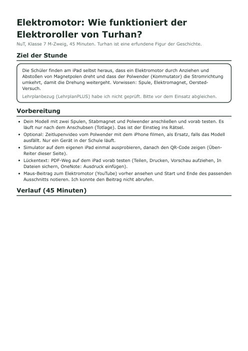

Interaktiv, iPad
Motor-Labor (Simulator)
Rotor drehen, Polwender schalten, Pole raten, Entdeckungen sammeln
Zu zweit, Querformat
Am iPad den Motor drehen, schalten und ausprobieren, bis klar ist, warum er nicht stehen bleibt. Ablauf, Simulator, Hefteintrag und Lösungen liegen auf dieser einen Seite.

Von oben nach unten durchgehen. Bei jeder Phase steht, was du brauchst. Die Phase mit "Zusatz" kannst du bei Zeitnot weglassen.
Rollerbild zeigen: Im Hinterrad steckt ein Elektromotor. Wie wird aus Strom eine Drehung? Jeder schreibt oder skizziert eine Vermutung ins Heft.
Vorhersage: Was passiert beim Einschalten? Es passiert nichts, erst nach dem Anschubsen läuft das Modell. Warum?
Zu zweit im Motor-Labor. Fünf Entdeckungen sammeln. Mit "Bauweise" zwischen Schulmodell und Lehrbuch wechseln.
A bis D zeigen lassen, dann auflösen. Bei Unklarheit eine falsche Antwort im Simulator widerlegen.
Kurzer Ausschnitt zum Vergleich mit dem eigenen Ergebnis. Entfällt bei Zeitnot.
Lückentext am iPad ausfüllen, mit Prüfen kontrollieren, als PDF sichern und in OneNote einfügen.
Der Gashebel ist die Spannung. Die Rätselfrage vom Anfang in einem Satz beantworten.
Alles, was in der Stunde gebraucht wird. Interaktives öffnest du mit "Öffnen", Blätter siehst du mit "Ansehen" oder speicherst sie mit "PDF laden".

Rotor drehen, Polwender schalten, Pole raten, Entdeckungen sammeln
Zu zweit, Querformat

Eine Diagnosefrage mit vier Antworten, jede Falschantwort zeigt eine typische Fehlvorstellung
Zeigen lassen: A bis D

Bauteile beschriften, drei Zustände, Merksatz. Antippen, prüfen, als PDF sichern
Danach PDF in OneNote



Die Kinder scannen den QR-Code und öffnen das Motor-Labor. Es läuft im Browser, ohne Anmeldung. Querformat ist am besten.
So landet dein fertiger Hefteintrag auf einer Seite in deinem OneNote-Heft.
Verlauf, Fachwissen, Hinge-Auswertung und Lösungen stehen auf der Lehrerseite. Hier das Wichtigste vorab.
Lehrerseite öffnen Lösung Hefteintrag